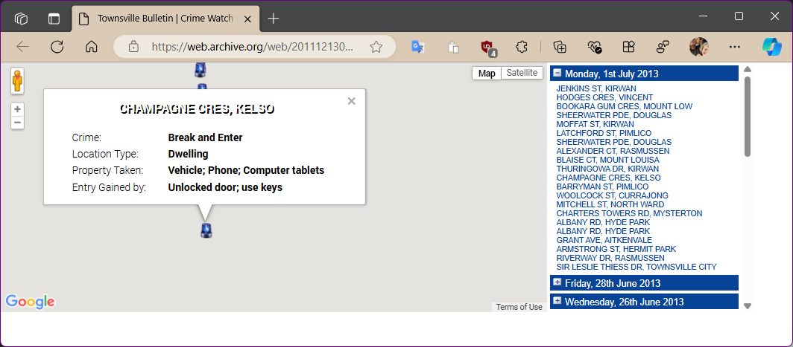
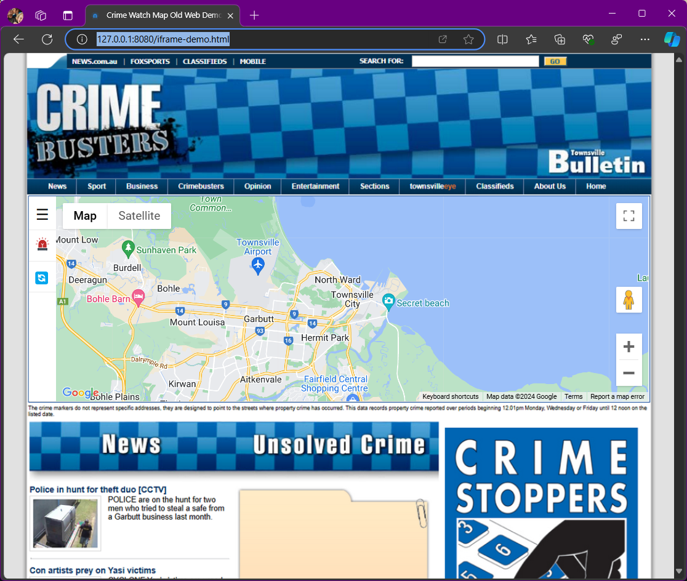

This is an upgrade of code I developed to show maps of crimes reported to police. This was used in local newspaper website.
Back in the day, we worked with Queensland Police Service to send reports, In another application, I imported
report files,
and created crimes_{dd-mm-yy}.xml files based on dates of reports.
This application was used to show reported events as markers using Google Maps API.
A first in Australia!
Today
Currently QPS have an application, which is similar to the one I develop while working for Townsville
Bulletin, in 2012:
Maps and statistics | QPS
Notes
I created this to outline my skills, ability to upgrade old code without original source:
- Important: the code is no longer in use, and the crime events are old and unconfirmed!
- Complete rewrite of old code.
- I un-obfuscated my original code downloaded from Wayback Machine.
- Upgrading to latest version of Google Maps API.
- Upgraded to use HTML5/ES6 Modules.
-
Uses the Haversine formula to calculate the distance between two points on the Earth's
surface, then sorts events based on distance from map center.
https://en.wikipedia.org/wiki/Haversine_formula - No external JavaScript frameworks, such as Angular or React, were used.
Here is reference to Wayback Machine Archive of Website, developed by me in 2012:
Crimebusters
| Townsville Bulletin - Townsville, North QLD, Australia
Links

Demos
I created these to show my skills, without having to checkout git repository
-
Full updated version of Application previously used inside Website.
crime-watch.html
 -
Mockup of the old website, using a screenshot as the background and an
<iframe>overlaid to simulate the old site's appearance:
Sample: iframe-demo.html

Wayback Machine screenshot: